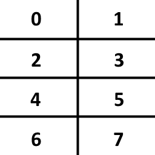
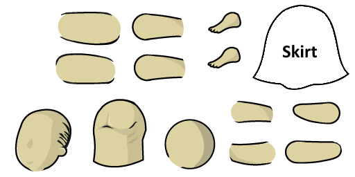
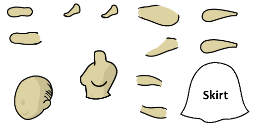

|
Custom outfit textures (alpha)
Extending the mods further: With this modded version of the game you can create custom textures for different outfits. For example the Rare and Legendary version of an outfit can have different textures.
Also this might replace the current mods that I made for PC and Android FS that's why there is a "config.json" where you can setup the basic mods (dweller limits, explorer limits, stimpack and radaway limits, room destruction).
Download and installation (Currently PC only)
- 1) Download the Mod.zip.
- 2) Locate the installation folder of FalloutShelter. Right click on Bethesda .NET launcher and you will see the path.
- 3) Goto "games/FalloutShelter/FalloutShelter_Data".
- 4) Extract the contents of the downloaded zip there (and overwrite 2 files).
- 5) Start FalloutShelter and load a vault (make sure to backup it before).
- 6) Check if the "Mods" folder contains a "Log.txt", if it does you did it.
- 7) Pat yourself on the back.
Usage
After you've installed everything and the game starts fine you should have a "Mods" folder in the "FalloutShelter_Data" folder with 2 important files there:
-
"textures.json": This file contains the different atlas textures which will be loaded by the mod. The file basically contains a JSON array of the different atlases.
Each atlas entry contains the following:- "name": The unique name of the atlas. This name will be used in other configs to refer to this texture.
- "file": The path to the actual file. This path is relative to the "Mods" folder. Only PNGs and JPGs are supported.
- "width": The width of the image in pixels.
- "height": The height of the image in pixels.
Note #1: Atlas sizes have to be power of 2 and it is recommended to use the same size for width and height. The game uses 1024x1024 atlases, so it is advised to stick to that.
Note #2: Atlas entries in the file have to be separated by a "," (comma), but after the last entry the separator character is not allowed.
Example file (Click to open)
-
"outfits.json": This file assings parts of an atlas to an outfit based on the outfit ID and its rarity.
Each atlas entry contains the following:- "id": The ID of the outfit. The complete list can be found here ("#" column). Not verified runtime.
- "rarity": This is an optional data. It can have the following values: Any, Common, Normal, Rare, Legendary.
- "maleAtlas": The name of the atlas which contains the texture for male characters.
- "maleAtlasSlot": The texture slot in the male atlas (see "slots" below).
- "femaleAtlas": The name of the atlas which contains the texture for female characters.
- "femaleAtlasSlot": The texture slot in the female atlas (see "slots" below).
Example file (Click to open)
Note #1: Each outfit needs a male and a female texture.
Note #2: Mod data is loaded when the a vault is opened after the game is started, so you need to restart the game to apply any change you did with the config files.
Atlas slots:
Each atlas is devided into two columns and four rows, creating 8 slots in each texture (doesn't depend on texture sizes).
Slot numbers range from 0 to 7 and arranged the following way:

In each slot the layout of an outfit looks like this (these are accurate 512x256 slot sized images, if you want to use these: right click and "save as" or use the template download):
- Male:

- Female:

Templates can be downloaded here.
Log:
After the mod manager is loaded (when a vault is loaded) a "Log.txt" is created.
This file contains errors if something went wrong, for example: image was not found, conflict between atlas names, etc. If the game crashes or something goes wrong check this file.